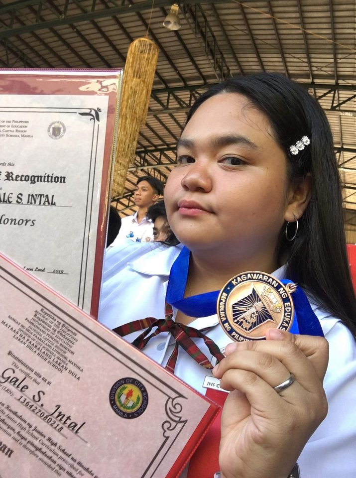
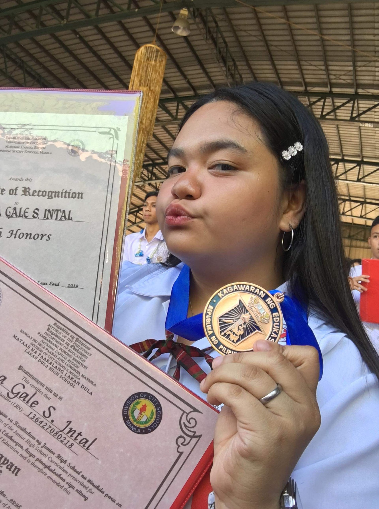
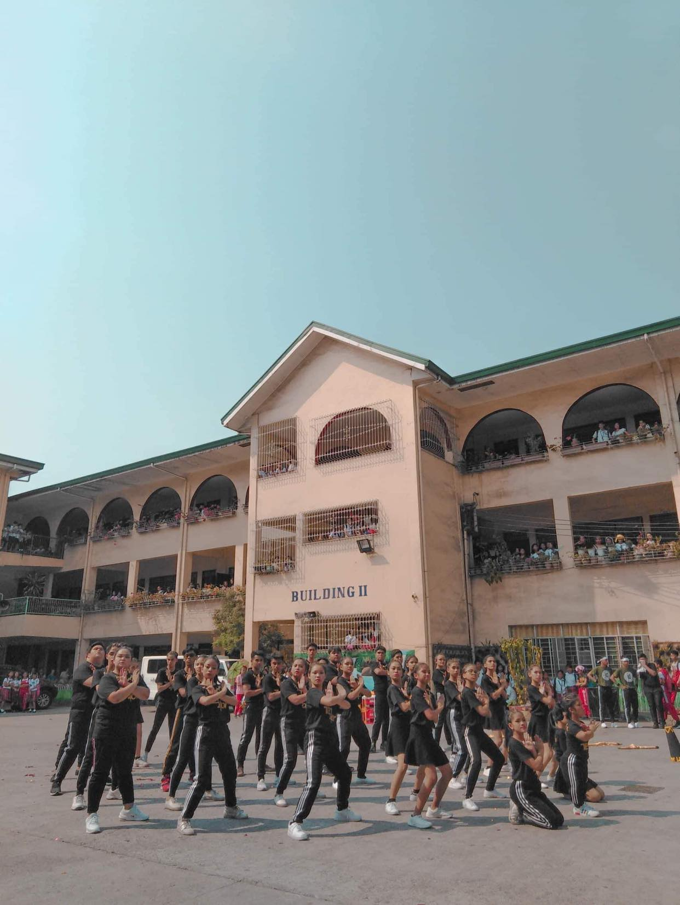

  
My most unforgettable experiences when I won at the essay writting contest way back on my grade school days. My friends and my clssmates are cheering me the loudest when the speaker announced that I won 2nd place. We celebrated back then by eating Jollibee at my friend's house. I really feel special back then. I'm glad that I won that time.
Going years back, I had I consider my most memorable year, and that was when I was in Grade 10. I met people who became my companions, my friends. I had the chance to lead them and be their one call away President. I was always suppressed to do adventures because I was told they're risky, but with them, I had the most adventurous moments of my life. I was able to break free, feel free, and enjoy my life every minute of that year. I became a happy person because they taught me to. They opened me to new adventures I wouldn't dare to take before. I learned a lot. I realized many things. I couldn't forget them.
I know you'll be back soon,
Ms. Allyssa